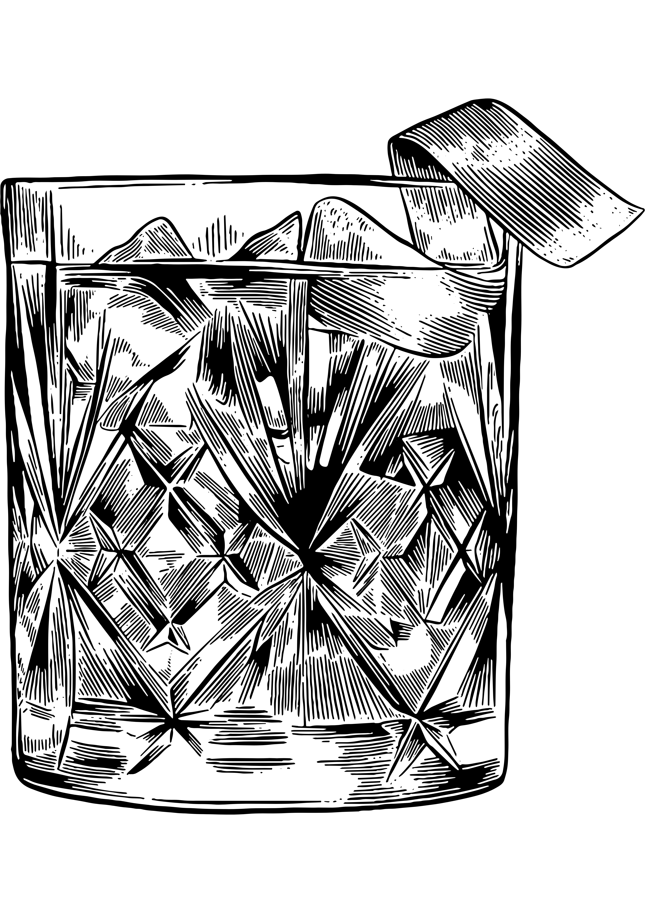

Cacao d’Or 🍹
Un rhum brun intense adouci par la rondeur du chocolat blanc, relevé d’un trait de citron et d’un sirop miel-gingembre. Un contraste riche et surprenant, entre chaleur, douceur et fraîcheur.

🥃 Ingrédients
- 5 cl Rhum brun
- 4 cl Liqueur chocolat blanc
- 1 cl Jus de citron
- 2 cl Sirop miel-gingembre
🍸 Verre

Old-Fashioned🧊 Préparation
 Shaker
Shaker
- Remplir un shaker de glace
- Ajouter tous les ingrédients
- Shaker énergiquement
- Filtrer dans le verre
✨ Décoration
- Chocolat en poudre - sur le bord du verre
- Citron — 1 tranche